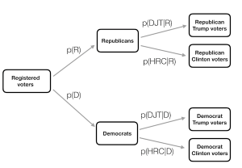

| aantal regendagen | aantal dagen gemeten | P(regen) |
|---|---|---|
| 73 | 365 | 0.2 |
Inleiding

Een paar jaar geleden schreef Russell A. Poldrack Statistical Thinking for the 21st Century. Dat vind ik een inspirerend boek. Poldrack wil ons de basisideeën van statistisch denken laten begrijpen. Zijn boek presenteert een systematische manier van denken over het beschrijven van de wereld met behulp van data, hoe we deze kunnen gebruiken bij het nemen van beslissingen en het doen van voorspellingen en dit alles in de context van onzekerheid die er in de wereld bestaat. Met de traditionele statistiekboeken kon hij niet uit de voeten en daarom besloot hij zijn eigen boek te maken. Hij gebruikt aansprekende datasets in zijn boek en moderne manieren om hiermee om te gaan.
Om je deze nieuwe manier van statistisch denken eigen te maken, moet je ermee werken, je moet het doen.
R en Python
Poldrack presenteert niet alleen zijn ideeën open-source, hij werkt ook met open-source programma’s en wil ons ermee laten werken. Naast zijn open-source boek Statistical Thinking for the 21st Centrury heeft hij ook twee open-source programmaboeken gemaakt die laten zien hoe je met data kunt werken. Allereerst is er An R companion to Statistical Thinking for the 21st Centrury. Dit document richt zich op het gebruik van R (en RStudio) als programmeertaal voor statistiek en data-analyse. Met dit programma heeft hijzelf niet zoveel mee op, maar daarin zitten wel pakketten waar hij graag mee werkt en die niet in andere programma’s zitten. Hijzelf heeft meer op met Python en hij schreef daarom ook de Python Companion to Statistical Thinking in the 21st Century
Quarto
Afgelopen weken heb ik zijn interessante boek nog eens gelezen. Ook nu weer vind ik zijn boek weer zeer aansprekend en uitdagend. Met beide programmaboeken in R en Python ernaast leer je met de goede talen van deze tijd te werken. Voor deze blog heb ik daarom twee hoofdstukken genomen die over waarschijnlijkheid en Bayesiaanse statistiek gaan. Dit leert mij niet alleen om met R te werken maar ook om deze handelingen in Python te doen. Via Quarto kun je met beide programma’s werken. Ik heb hoofdstuk 6 (Waarschijnlijkheid) en hoofdstuk 11 (Bayesiaanse statstiek) genomen en voor dit blog gewerkt. Deze blog schrijf ik in R en Quarto en de bewerking hiervan vind je hieronder1.
Waarschijnlijkheid
Eerst maar eens enkele R-pakketten openen om mee te werken (dplyr, reshap2, tidyr, ggplot2, knitr, readr, cowplot, janitor) en om de data te kunnen laden (NHANES):
Waarschijnlijkheidstheorie is de tak van de wiskunde die zich bezighoudt met kans en onzekerheid. Het vormt een belangrijk deel van de basis voor statistiek omdat het ons de wiskundige instrumenten verschaft om onzekere gebeurtenissen te beschrijven. De studie van waarschijnlijkheid is deels ontstaan uit belangstelling voor het begrijpen van kansspelen, zoals kaarten of dobbelen. Deze spelen bieden nuttige voorbeelden van veel statistische concepten omdat bij herhaling van deze spelen de kans op verschillende uitkomsten (meestal) gelijk blijft. Er zijn echter diepgaande vragen over de betekenis van waarschijnlijkheid die we hier niet zullen behandelen (zie Aanbevolen literatuur aan het einde als je meer wilt weten over dit fascinerende onderwerp en zijn geschiedenis).
Wat is waarschijnlijkheid?
Informeel denken we bij waarschijnlijkheid meestal aan een getal dat de waarschijnlijkheid beschrijft dat een bepaalde gebeurtenis zich voordoet, variërend van nul (onmogelijk) tot één (zeker). Soms worden waarschijnlijkheden uitgedrukt in percentages, die variëren van nul tot honderd, zoals wanneer het weerbericht voorspelt dat er vandaag twintig procent kans is op regen. In elk geval drukken deze getallen uit hoe waarschijnlijk die bepaalde gebeurtenis is, variërend van absoluut onmogelijk tot absoluut zeker.
Om de kansrekening te formaliseren, moeten we eerst een paar termen definiëren:
- Een experiment is elke activiteit die een resultaat oplevert of observeert. Voorbeelden zijn het opgooien van een munt, het gooien met een zeszijdige dobbelsteen of het uitproberen van een nieuwe route naar het werk om te zien of die sneller is dan de oude route.
- De steekproefruimte is de verzameling mogelijke uitkomsten voor een experiment. Wij stellen deze voor door ze op te sommen binnen een reeks haakjes. Voor een muntstuk is de steekproefruimte {koppen, munt}. Voor een zeszijdige dobbelsteen is de steekproefruimte elk van de mogelijke getallen die kunnen verschijnen: {1,2,3,4,5,6}. Voor de hoeveelheid tijd die nodig is om aan het werk te gaan, is de steekproefruimte alle mogelijke reële getallen groter dan nul (omdat het geen negatieve hoeveelheid tijd kan kosten om ergens te komen, tenminste nog niet). We zullen niet proberen al die getallen tussen haakjes te zetten.
- Een gebeurtenis is een deelverzameling van de steekproefruimte. In principe kan het een of meer mogelijke uitkomsten in de steekproefruimte zijn, maar we zullen ons hier voornamelijk richten op elementaire gebeurtenissen die bestaan uit precies één mogelijke uitkomst. Dit kan bijvoorbeeld kop zijn bij een enkele muntworp, een 4 gooien bij een dobbelsteenworp of 21 minuten over de nieuwe route naar huis doen.
Nu we deze definities hebben, kunnen we de formele kenmerken van een kans schetsen, die voor het eerst werden gedefinieerd door de Russische wiskundige Andrei Kolmogorov. Dit zijn de kenmerken die een waarde moeten hebben om een kans te zijn. Laten we zeggen dat we een steekproefruimte hebben gedefinieerd door N onafhankelijke gebeurtenissen, \({E_1, E_2, .... , E_N}\), en \(X\) is een willekeurige variabele die aangeeft welke gebeurtenis zich heeft voorgedaan. \(P(X=E_i)\) is de kans op gebeurtenis \(i\):
- De waarschijnlijkheid kan niet negatief zijn: \(P(X=E_i) \ge 0\).
- De totale waarschijnlijkheid van alle uitkomsten in de steekproefruimte is 1; dat wil zeggen, als we de waarschijnlijkheid van elke Ei nemen en optellen, moeten ze bij elkaar opgeteld 1 zijn. We kunnen dit uitdrukken met het sommatieteken \(sum\):
\[ \sum_{i=1}^N{P(X=E_i)} = P(X=E_1) + P(X=E_2) + ... + P(X=E_N) = 1 \]
Dit wordt geïnterpreteerd als: “Neem alle N elementaire gebeurtenissen, die we gelabeld hebben van 1 tot N, en tel hun kansen op. Deze moeten bij elkaar opgeteld één zijn.”
- De waarschijnlijkheid van een individuele gebeurtenis kan niet groter zijn dan één: \(P(X=E_i)≤ 1\). Dit vloeit voort uit het vorige punt; aangezien zij moeten optellen tot één en zij niet negatief kunnen zijn, kan geen enkele kans groter zijn dan één.
Hoe stellen we waarschijnlijkheden vast?
Nu we weten wat een waarschijnlijkheid is, hoe komen we er eigenlijk achter wat de waarschijnlijkheid is voor een bepaalde gebeurtenis?
Persoonlijke overtuiging
Stel dat ik u vraag wat de kans is dat Bernie Sanders de presidentsverkiezingen van 2016 zou hebben gewonnen als hij de democratische kandidaat was geweest in plaats van Hilary Clinton? We kunnen het experiment niet uitvoeren om de uitkomst te vinden. Maar de meeste mensen met kennis van de Amerikaanse politiek zouden bereid zijn om op zijn minst een gokje te wagen naar de waarschijnlijkheid van deze gebeurtenis. In veel gevallen is persoonlijke kennis en/of mening de enige leidraad die we hebben om de waarschijnlijkheid van een gebeurtenis te bepalen, maar dit is wetenschappelijk gezien niet erg bevredigend.
Empirische frequentie
Een andere manier om de waarschijnlijkheid van een gebeurtenis te bepalen is het experiment vele malen uit te voeren en te tellen hoe vaak elke gebeurtenis zich voordoet. Uit de relatieve frequentie van de verschillende uitkomsten kunnen we de waarschijnlijkheid van elke uitkomst berekenen. Laten we bijvoorbeeld zeggen dat we de kans op regen in San Francisco willen weten. We moeten eerst het experiment definiëren — laten we zeggen dat we voor elke dag in 2017 de gegevens van de National Weerstation bekijken en bepalen of er regen is gevallen op het weerstation in het centrum van San Francisco. Volgens deze gegevens waren er in 2017 73 regendagen. Om de kans op regen in San Francisco te berekenen, delen we gewoon het aantal regendagen door het aantal getelde dagen (365), wat P(regen in SF in 2017) = 0,2 oplevert.
Hoe weten we dat de empirische waarschijnlijkheid ons het juiste getal geeft? Het antwoord op deze vraag komt van de wet van de grote getallen, die aantoont dat de empirische kans de ware kans benadert naarmate de steekproefomvang toeneemt. We kunnen dit zien als een groot aantal keren munten opgooien (simuleren), en kijken naar onze schatting van de kans op kop na elke worp. Ga er voor hier maar van uit dat we voor de computer een manier hebben om een willekeurige uitkomst te genereren voor elke worp.
Het linkerpaneel van figuur laat zien dat de geschatte kans op koppen convergeert naar de werkelijke waarde van 0,5 naarmate het aantal steekproeven (d.w.z. muntproeven) toeneemt. Merk echter op dat de schattingen zeer ver van de ware waarde kunnen afwijken wanneer de steekproefomvang klein is. Een praktijkvoorbeeld hiervan werd gezien bij de speciale verkiezing voor de Amerikaanse Senaat in Alabama in 2017, waarbij de Republikein Roy Moore het opnam tegen de Democraat Doug Jones.Het rechterpaneel toont het relatieve aantal stemmen dat in de loop van de avond voor elk van de kandidaten werd gemeld, naarmate er meer stembiljetten werden geteld. Aan het begin van de avond waren de stemmenaantallen bijzonder onstabiel, met een grote aanvankelijke voorsprong voor Jones en een lange periode waarin Moore de leiding had, totdat Jones uiteindelijk de leiding nam en de race won.
Deze twee voorbeelden tonen aan dat, hoewel grote steekproeven uiteindelijk zullen convergeren naar de ware waarschijnlijkheid, de resultaten met kleine steekproeven er ver naast kunnen zitten. Helaas vergeten veel mensen dit en overinterpreteren ze de resultaten van kleine steekproeven. Dit werd de wet van de kleine aantallen genoemd door de psychologen Danny Kahneman en Amos Tversky, die aantoonden dat mensen (zelfs getrainde onderzoekers) zich vaak gedragen alsof de wet van de grote aantallen ook geldt voor kleine steekproeven en te veel geloof hechten aan resultaten die gebaseerd zijn op kleine datasets. In het boek laten we voorbeelden zien van hoe onstabiel statistische resultaten kunnen zijn wanneer zij worden gegenereerd op basis van kleine steekproeven.
Klassieke waarschijnlijkheid
Het is onwaarschijnlijk dat iemand van ons ooit tienduizenden keren een munt heeft opgegooid, maar we zijn toch bereid te geloven dat de kans dat er kop wordt gegooid 0,5 is. Dit weerspiegelt het gebruik van nog een andere benadering om kansen te berekenen, die we klassieke kans noemen. Bij deze benadering berekenen we de kans rechtstreeks op basis van onze kennis van de situatie.
Klassieke kansberekening is ontstaan uit de studie van kansspelen zoals dobbelen en kaarten. Een beroemd voorbeeld ontstond uit een probleem van een Franse gokker die Chevalier de Méré heette. De Méré speelde twee verschillende dobbelspellen: Bij het eerste gokte hij op de kans op minstens één zes bij vier worpen met een zeszijdige dobbelsteen, terwijl hij bij het tweede gokte op de kans op minstens één dubbele zes bij 24 worpen met twee dobbelstenen. Hij verwachtte bij beide gokken geld te winnen, maar hij ontdekte dat hij bij de eerste gok gemiddeld geld won, maar bij de tweede gok gemiddeld geld verloor. Om dit te begrijpen wendde hij zich tot zijn vriend, de wiskundige Blaise Pascal, die nu erkend wordt als een van de grondleggers van de kansrekening.
Hoe kunnen we deze vraag begrijpen met behulp van de kansrekening? In de klassieke kansrekening gaan we ervan uit dat alle elementaire gebeurtenissen in de steekproefruimte even waarschijnlijk zijn; dat wil zeggen, als je met een dobbelsteen gooit, is de kans dat elk van de mogelijke uitkomsten ({1,2,3,4,5,6}) zich voordoet even groot. (Daarom kunnen we de waarschijnlijkheid van elke individuele uitkomst berekenen als één gedeeld door het aantal mogelijke uitkomsten):
\[ P(uitkomst_i) = \frac{1}{\text{aantal mogelijke uitkomsten}} \]
Voor de zeszijdige dobbelsteen is de kans op elke individuele uitkomst 1/6.
Dit is mooi, maar de Méré was geïnteresseerd in meer complexe gebeurtenissen, zoals wat er gebeurt bij meerdere dobbelsteenworpen. Hoe berekenen we de waarschijnlijkheid van een complexe gebeurtenis (die een vereniging is van afzonderlijke gebeurtenissen), zoals het gooien van een zes bij de eerste of tweede worp? We geven de vereniging van gebeurtenissen wiskundig weer met behulp van het symbool \(\Cup\): als bijvoorbeeld de kans op het gooien van een zes bij de eerste worp \(P(Uitkomst6_{worp1})\) is en de kans op het gooien van een zes bij de tweede worp \(P(Uitkomst6_{worp2})\), dan wordt de vereniging \(P(Uitkomst6_{worp1} \cup Uitkomst6_{worp2})\) genoemd.
De Méré dacht (ten onrechte, zoals we hieronder zullen zien) dat hij gewoon de kansen van de individuele gebeurtenissen kon optellen om de kans op de gecombineerde gebeurtenis te berekenen, wat betekent dat de kans op het gooien van een zes bij de eerste of tweede worp als volgt zou worden berekend:
\[ P(Uitkomst6_{worp1}) = 1/6 \]
\[ P(Uitkomst6_{worp2}) = 1/6 \]
\[ de Méré's \ fout: \]
\[ P(Uitkomst6_{worp1} \cup Uitkomst6_{worp2}) = P(Uitkomst6_{worp1}) + P(Uitkomst6_{worp2}) = 1/6 + 1/6 = 1/3 \]
De Méré redeneerde op basis van deze onjuiste veronderstelling dat de kans op minstens één zes in vier worpen de som was van de kansen op elke afzonderlijke worp: \(4*\frac{1}{6}= \frac{2}{3}\). Evenzo redeneerde hij dat aangezien de kans op een dubbele zes bij het gooien van twee dobbelstenen 1/36 is, de kans op minstens één dubbele zes bij 24 worpen met twee dobbelstenen \(24*\frac{1}{36}=\frac{2}{3}\) zou zijn. Maar terwijl hij consequent geld won met de eerste weddenschap, verloor hij geld met de tweede weddenschap. Wat is er aan de hand?
Om de fout van de Méré te begrijpen, moeten we enkele regels van de kansrekening introduceren. De eerste is de aftrekregel, die zegt dat de kans dat een gebeurtenis A niet gebeurt, één is min de kans dat de gebeurtenis wel gebeurt:
\[ P(\neg A) = 1 - P(A) \]
waarbij \(\neg A\) betekent “niet A”. Deze regel vloeit rechtstreeks voort uit de axioma’s die we hierboven hebben besproken; omdat A en \(\neg A\) de enige mogelijke uitkomsten zijn, moet hun totale waarschijnlijkheid opgeteld 1 zijn. Bijvoorbeeld, als de kans op het gooien van een één in een enkele worp \(\frac{1}{6}\) is, dan is de kans op het gooien van iets anders dan een één \(\frac{5}{6}\).
Een tweede regel vertelt ons hoe we de kans op een gecombineerde gebeurtenis moeten berekenen – dat wil zeggen, de kans dat twee gebeurtenissen allebei voorkomen. We noemen dit een intersectie, die wordt aangeduid met het symbool \(\cap\); zo betekent \(P(A \cap B)\) de kans dat zowel A als B zich voordoen. We zullen ons concentreren op een versie van de regel die ons vertelt hoe we deze grootheid moeten berekenen in het speciale geval dat de twee gebeurtenissen onafhankelijk van elkaar zijn; we zullen later leren wat het begrip onafhankelijkheid precies betekent, maar voor nu kunnen we gewoon aannemen dat de twee dobbelsteenworpen onafhankelijke gebeurtenissen zijn. We berekenen de kans op het snijpunt van twee onafhankelijke gebeurtenissen door eenvoudigweg de kansen van de afzonderlijke gebeurtenissen te vermenigvuldigen:
\[ P(A \cap B) = P(A) * P(B)\ \text{als en alleen als A en B onafhankelijk zijn} \]
De kans op een zes bij beide worpen is dus \(\frac{1}{6}*\frac{1}{6}=\frac{1}{36}\).
De derde regel vertelt ons hoe we kansen moeten optellen - en hier zien we de bron van de fout van de Méré. De optelregel vertelt ons dat om de kans te krijgen dat een van twee gebeurtenissen zich voordoet, we de individuele kansen bij elkaar optellen, maar vervolgens de kans dat beide gebeurtenissen zich samen voordoen van elkaar aftrekken:
\[ P(A \cup B) = P(A) + P(B) - P(A \cap B) \]
In zekere zin voorkomt dit dat we die gevallen tweemaal tellen, en dat is wat de regel onderscheidt van de onjuiste berekening van de Méré. Laten we zeggen dat we de kans op een 6 willen vinden bij een van de twee worpen. Volgens onze regels:
\[ P(Uitkomst6_{worp1} \cup Uitkomst6_{worp2}) = P(Uitkomst6_{worp1}) + P(Uitkomst6_{worp2}) - P(Uitkomst6_{worp1} \cap Uitkomst6_{worp2}) \]
\[ = \frac{1}{6} + \frac{1}{6} - \frac{1}{36} = \frac{11}{36} \]
Laten we een grafische voorstelling gebruiken om een andere kijk op deze regel te krijgen. Het figuur hierboven toont een matrix met alle mogelijke combinaties van resultaten bij twee worpen en benadrukt de cellen met een zes bij de eerste of tweede worp. Als je de cellen in het rood optelt, zie je dat er 11 van zulke cellen zijn. Hieruit blijkt waarom de optelregel een ander antwoord geeft dan dat van de Méré; als we simpelweg de kansen voor de twee worpen bij elkaar zouden optellen zoals hij deed, dan zouden we (6,6) bij beide tellen, terwijl het eigenlijk maar één keer geteld zou moeten worden.
Oplossen van het probleem van de Méré
Blaise Pascal gebruikte de regels van de waarschijnlijkheid om een oplossing te vinden voor het probleem van de Méré. Ten eerste besefte hij dat het berekenen van de kans op minstens één gebeurtenis uit een combinatie lastig was, terwijl het berekenen van de kans dat iets niet voorkomt bij meerdere gebeurtenissen relatief eenvoudig is – het is gewoon het product van de kansen van de afzonderlijke gebeurtenissen. Dus in plaats van de kans te berekenen op minstens één zes in vier worpen, berekende hij de kans op geen zessen in alle worpen:
\[ P(\text{geen zessen bij vier keer werpen}) = \frac{5}{6}*\frac{5}{6}*\frac{5}{6}*\frac{5}{6}=\bigg(\frac{5}{6}\bigg)^4=0.482 \]
Hij gebruikte vervolgens het feit dat de kans op geen zessen in vier worpen het complement is van ten minste één zes in vier worpen (ze moeten dus optellen tot één), en gebruikte de aftrekregel om de kans op rente te berekenen:
\[ P(\text{op z'n minst een zes in vier worpen}) = 1 - \bigg(\frac{5}{6}\bigg)^4=0.517 \]
De Méré’s gok dat hij minstens één zes zou gooien in vier worpen heeft een waarschijnlijkheid van meer dan 0,5, wat verklaart waarom de Méré gemiddeld geld verdiende met deze inzet.
Maar hoe zit het met de Méré’s tweede weddenschap? Pascal gebruikte dezelfde truc:
\[ P(\text{geen dubbele zes in 24 worpen}) = \bigg(\frac{35}{36}\bigg)^{24}=0.509 \]
\[ P(\text{ten minste een dubbele zes in 24 worpen}) = 1 - \bigg(\frac{35}{36}\bigg)^{24}=0.491 \]
De kans op dit resultaat lag iets onder 0,5, wat aantoont waarom de Méré gemiddeld geld verloor op deze weddenschap.
Waarschijnlijkheidsdistributies
Een waarschijnlijkheidsdistributie beschrijft de waarschijnlijkheid van alle mogelijke uitkomsten in een experiment. Bijvoorbeeld, op 20 januari 2018 raakte de basketballer Steph Curry slechts 2 van de 4 vrije worpen in een wedstrijd tegen de Houston Rockets. We weten dat Curry’s totale kans op vrije worpen over het hele seizoen 0,91 was, dus het lijkt vrij onwaarschijnlijk dat hij slechts 50% van zijn vrije worpen in een wedstrijd zou raken, maar hoe onwaarschijnlijk is het precies? We kunnen dit bepalen met behulp van een theoretische kansverdeling; in dit boek zullen we een aantal van deze kansverdelingen tegenkomen, die elk geschikt zijn om verschillende soorten gegevens te beschrijven. In dit geval gebruiken we de binomiale verdeling, die een manier biedt om de kans te berekenen op een bepaald aantal successen uit een aantal proeven met succes of mislukking en niets daartussen (bekend als “Bernoulli proeven”), gegeven een bekende kans op succes op elke proef. Deze verdeling wordt gedefinieerd als:
\[ P(k; n,p) = P(X=k) = \binom{n}{k} p^k(1-p)^{n-k} \]
Dit verwijst naar de kans op k successen op n proeven als de kans op succes p is. Je bent misschien niet bekend met \(\binom{n}{k}\), die de binomiaalcoëfficiënt wordt genoemd. De binomiaalcoëfficiënt wordt ook wel “n-kiezen” genoemd, omdat hij het aantal verschillende manieren beschrijft waarop men k items kan kiezen uit n totale items. De binomiaalcoëfficiënt wordt als volgt berekend:
\[ \binom{n}{k} = \frac{n!}{k!(n-k)!} \] waarbij het uitroepteken (!) verwijst naar het factoriale van het getal:
\[ n! = \prod_{i=1}^n i = n*(n-1)*...*2*1 \]
De productoperator \(\prod\) lijkt op de sommator \(\sum\), maar vermenigvuldigt in plaats van telt op. In dit geval worden alle getallen van één tot \(n\) met elkaar vermenigvuldigd.
In het voorbeeld van Steph Curry’s vrije worpen:
\[ P(2;4,0.91) = \binom{4}{2} 0.91^2(1-0.91)^{4-2} = 0.040 \]
Hieruit blijkt dat gezien Curry’s totale percentage vrije worpen, het zeer onwaarschijnlijk is dat hij slechts 2 van de 4 vrije worpen zou raken. Zo zie je maar dat onwaarschijnlijke dingen echt gebeuren in de echte wereld.
Cumulatieve waarschijnlijkheids-distributies
Vaak willen we niet alleen weten hoe waarschijnlijk een bepaalde waarde is, maar ook hoe waarschijnlijk het is om een waarde te vinden die even extreem of meer is dan een bepaalde waarde; dit wordt heel belangrijk als later hypothesetesten worden besproken. Om deze vraag te beantwoorden kunnen we een cumulatieve kansverdeling gebruiken; terwijl een standaard kansverdeling ons de kans op een bepaalde waarde vertelt, vertelt de cumulatieve verdeling ons de kans op een waarde die even groot of groter (of even klein of kleiner) is dan een bepaalde waarde.
\[ P(k\le2)= P(k=2) + P(k=1) + P(k=0) = 6e^{-5} + .002 + .040 = .043 \]
In veel gevallen zou het aantal mogelijke uitkomsten te groot zijn om de cumulatieve kans te berekenen door alle mogelijke waarden op te sommen; gelukkig kan deze direct worden berekend voor elke theoretische kansverdeling. De tabel hieronder toont de cumulatieve kans op elk mogelijk aantal geslaagde vrije worpen in het voorbeeld van hierboven, waaruit we kunnen opmaken dat de kans dat Curry 2 of minder vrije worpen maakt uit 4 pogingen 0,043 is.
| numSuccesses | Probability | CumulativeProbability |
|---|---|---|
| 0 | 0.000 | 0.000 |
| 1 | 0.003 | 0.003 |
| 2 | 0.040 | 0.043 |
| 3 | 0.271 | 0.314 |
| 4 | 0.686 | 1.000 |
Conditionele waarschijnlijkheid
Tot nu toe hebben wij ons beperkt tot eenvoudige kansen - dat wil zeggen de kans op een enkele gebeurtenis of combinatie van gebeurtenissen. Vaak willen we echter de waarschijnlijkheid van een bepaalde gebeurtenis bepalen, gegeven dat een andere gebeurtenis heeft plaatsgevonden, wat bekend staat als conditionele waarschijnlijkheid.
Laten we de Amerikaanse presidentsverkiezingen van 2016 als voorbeeld nemen. Er zijn twee eenvoudige waarschijnlijkheden die we kunnen gebruiken om het electoraat te beschrijven. Ten eerste weten we de kans dat een kiezer in de VS aangesloten is bij de Republikeinse partij: \(p(Republikein) = 0,44\). We weten ook de kans dat een kiezer zijn stem uitbrengt ten gunste van Donald Trump: \(p(Trump-stemmer)=0,46\). Laten we echter zeggen dat we het volgende willen weten: Wat is de kans dat iemand zijn stem op Donald Trump heeft uitgebracht, gegeven dat hij Republikein is?
Om de voorwaardelijke kans op A gegeven B te berekenen (die we schrijven als \(P(A|B)\), “kans op A, gegeven B”), moeten we de gezamenlijke kans kennen (d.w.z. de kans dat zowel A als B voorkomen), evenals de totale kans op B:
\[ P(A|B) = \frac{P(A \cap B)}{P(B)} \]
Dat wil zeggen, we willen weten hoe groot de kans is dat beide dingen waar zijn, gegeven dat hetgene waarop de voorwaarde betrekking heeft waar is.

Het kan nuttig zijn dit grafisch voor te stellen. Hierboven zien we een stroomdiagram die laat zien hoe de volledige populatie kiezers uiteenvalt in Republikeinen en Democraten, en hoe de conditionele waarschijnlijkheid (conditionering op partij) de leden van elke partij verder uitsplitst naar hun stemgedrag.
Vaststellen van conditionele waarschijnlijkheden van data
Wij kunnen voorwaardelijke kansen ook rechtstreeks uit gegevens berekenen. Stel dat we geïnteresseerd zijn in de volgende vraag: Wat is de kans dat iemand diabetes heeft, als hij niet lichamelijk actief is? – Dat is \(P(diabetes|inactief)\). De NHANES-dataset bevat twee variabelen die de twee delen van deze vraag behandelen. De eerste (Diabetes) vraagt of de persoon ooit te horen heeft gekregen dat hij diabetes heeft, de tweede (``PhysActive```) registreert of de persoon deelneemt aan sport, fitness of recreatieve activiteiten van ten minste matige intensiteit. Laten we eerst de eenvoudige kansen berekenen die in de tabel staan. De tabel laat zien dat de kans dat iemand in de NHANES-dataset diabetes heeft .1 is, en dat de kans dat iemand inactief is .45 is.
| Answer | N_diabetes | P_diabetes | N_PhysActive | P_PhysActive |
|---|---|---|---|---|
| No | 4893 | 0.8989528 | 2472 | 0.4541613 |
| Yes | 550 | 0.1010472 | 2971 | 0.5458387 |
| Diabetes | PhysActive | n | prob |
|---|---|---|---|
| No | No | 2123 | 0.3900423 |
| No | Yes | 2770 | 0.5089105 |
| Yes | No | 349 | 0.0641191 |
| Yes | Yes | 201 | 0.0369282 |
Om \(P(diabetes|inactief)\) te berekenen moeten we ook de gezamenlijke waarschijnlijkheid van diabetes en inactiviteit kennen, naast de eenvoudige waarschijnlijkheid van elk van beide. Deze staan in de tabel. Op basis van deze gezamenlijke kansen kunnen we \(P(diabetes|inactief)\) berekenen. Een manier om dit in een computerprogramma te doen is eerst te bepalen of de FysActieve variabele voor elk individu gelijk was aan “Nee”, en dan het gemiddelde van die waarheidswaarden te nemen. Aangezien TRUE/FALSE-waarden door de meeste programmeertalen (waaronder R en Python) worden behandeld als respectievelijk 1/0, kunnen we de waarschijnlijkheid van een eenvoudige gebeurtenis gemakkelijk bepalen door eenvoudigweg het gemiddelde te nemen van een logische variabele die de waarheidswaarde ervan weergeeft. Vervolgens gebruiken we die waarde om de voorwaardelijke kans te berekenen, waarbij we vinden dat de kans dat iemand diabetes heeft, gegeven dat hij lichamelijk inactief is, is 0.141.
Onafhankelijkheid
De term “onafhankelijk” heeft een zeer specifieke betekenis in de statistiek, die enigszins afwijkt van het gangbare gebruik van de term. Statistische onafhankelijkheid tussen twee variabelen betekent dat het kennen van de waarde van de ene variabele niets zegt over de waarde van de andere. Dit kan worden uitgedrukt als:
\[ P(A|B) = P(A) \]
Dat wil zeggen, de kans op A gegeven een bepaalde waarde van B is gewoon hetzelfde als de totale kans op A. Als we het zo bekijken, zien we dat veel gevallen van wat we in de echte wereld “onafhankelijkheid” zouden noemen, eigenlijk niet statistisch onafhankelijk zijn. Zo wil een kleine groep Californiërs momenteel een nieuwe onafhankelijke staat uitroepen, Jefferson genaamd, die een aantal provincies in Noord-Californië en Oregon zou omvatten. Als dit zou gebeuren, dan zou de kans dat een huidige inwoner van Californië nu in de staat Jefferson zou wonen \(P({Jeffersonian})=0.014\) zijn, terwijl de kans dat hij een inwoner van Californië zou blijven \(P({Californian})=0.986\) zou zijn. De nieuwe staten zouden politiek onafhankelijk kunnen zijn, maar ze zouden niet statistisch onafhankelijk zijn, want als we weten dat iemand Jeffersonian is, dan kunnen we er zeker van zijn dat hij niet Californiër is! Dat wil zeggen, terwijl onafhankelijkheid in het gewone taalgebruik vaak verwijst naar reeksen die elkaar uitsluiten, verwijst statistische onafhankelijkheid naar het geval waarin men niets kan voorspellen over een variabele op basis van de waarde van een andere variabele. Als je bijvoorbeeld iemands haarkleur kent, kun je waarschijnlijk niet zeggen of hij chocolade- of aardbeienijs prefereert.
Laten we een ander voorbeeld bekijken, aan de hand van de NHANES-gegevens: Zijn lichamelijke en geestelijke gezondheid onafhankelijk van elkaar? NHANES bevat twee relevante vragen: PhysActive, die vraagt of de persoon lichamelijk actief is, en DaysMentHlthBad, die vraagt hoeveel dagen van de laatste 30 de persoon een slechte geestelijke gezondheid had. Laten we iedereen die de afgelopen maand meer dan 7 dagen een slechte geestelijke gezondheid had, beschouwen als iemand met een slechte geestelijke gezondheid. Op basis hiervan kunnen we een nieuwe variabele genaamd badMentalHealth definiëren als een logische variabele die aangeeft of elke persoon meer dan 7 dagen een slechte geestelijke gezondheid had of niet. We kunnen de gegevens eerst samenvatten om te laten zien hoeveel personen in elke combinatie van de twee variabelen vallen (weergegeven in de tabel hieronder en dan delen door het totale aantal waarnemingen om een tabel met verhoudingen te maken.
| PhysActive | Bad Mental Health | Good Mental Health | Total |
|---|---|---|---|
| No | 629 | 2510 | 3139 |
| Yes | 471 | 3095 | 3566 |
| Total | 1100 | 5605 | 6705 |
| PhysActive | Bad Mental Health | Good Mental Health | Total |
|---|---|---|---|
| No | 0.0938106 | 0.3743475 | 0.4681581 |
| Yes | 0.0702461 | 0.4615958 | 0.5318419 |
| Total | 0.1640567 | 0.8359433 | 1.0000000 |
Dit toont ons het aandeel van alle waarnemingen die in elke cel vallen. Wat we hier echter willen weten is de voorwaardelijke kans op een slechte geestelijke gezondheid, afhankelijk van of men lichamelijk actief is of niet. Om dit te berekenen delen we elke groep lichaamsbeweging door het totale aantal waarnemingen, zodat elke rij nu sommeert tot één (weergegeven in Tabel hierboven). Hier zien we de voorwaardelijke kansen op een slechte of goede geestelijke gezondheid voor elke groep lichaamsbeweging (in de bovenste twee rijen) samen met de algemene kans op een goede of slechte geestelijke gezondheid in de derde rij. Om te bepalen of geestelijke gezondheid en lichamelijke activiteit onafhankelijk zijn, zouden we de eenvoudige kans op een slechte geestelijke gezondheid (in de derde rij) vergelijken met de voorwaardelijke kans op een slechte geestelijke gezondheid als men lichamelijk actief is (in de tweede rij).
| PhysActive | Bad Mental Health | Good Mental Health | Total |
|---|---|---|---|
| No | 0.2003823 | 0.7996177 | 1 |
| Yes | 0.1320808 | 0.8679192 | 1 |
| Total | 0.1640567 | 0.8359433 | 1 |
De totale kans op slechte geestelijke gezondheid \(P({ slechte geestelijke gezondheid})\) is 0.1640567 terwijl de voorwaardelijke kans \(P({ slechte geestelijke gezondheid|fysiek actief})\) 0.1320808 is. Het lijkt er dus op dat de voorwaardelijke waarschijnlijkheid iets kleiner is dan de totale waarschijnlijkheid, wat suggereert dat ze niet onafhankelijk zijn, hoewel we dat niet zeker kunnen weten door alleen naar de getallen te kijken, omdat die getallen anders kunnen zijn door willekeurige variabiliteit in onze steekproef. Later in het boek bespreken we statistische hulpmiddelen waarmee we direct kunnen testen of twee variabelen onafhankelijk zijn.
Omdraaien van een conditionele waarschijnlijkheid: Bayes’ regel
In veel gevallen weten we \(P(A|B)\) maar willen we eigenlijk \(P(B|A)\) weten. Dit komt vaak voor bij medische screening, waar we \(P(positieve testuitslag|ziekte)\) weten, maar wat we willen weten is \(P(ziekte|positieve testuitslag)\). Sommige artsen bevelen bijvoorbeeld aan dat mannen boven de 50 jaar een screening ondergaan met een test, die prostaat-specifiek antigeen (PSA) heet, om te screenen op mogelijke prostaatkanker. Voordat een test wordt goedgekeurd voor gebruik in de medische praktijk moet de fabrikant twee aspecten van de werking van de test testen. Ten eerste moeten ze aantonen hoe sensitief de test is - dat wil zeggen, hoe groot de kans is dat de ziekte wordt gevonden als die aanwezig is: \(\text{gevoeligheid} = P(\text{positieve test|ziekte})\). Ze moeten ook aantonen hoe specifiek de test is, dat wil zeggen hoe groot de kans is dat de test een negatief resultaat geeft als er geen ziekte aanwezig is: \[\text{specificiteit} = P(\text{negatieve test|geen ziekte}\]. Voor de PSA-test weten we dat de sensitiviteit ongeveer 80% en de specificiteit ongeveer 70% is. Deze geven echter geen antwoord op de vraag die de arts voor een bepaalde patiënt wil beantwoorden: hoe groot is de kans dat hij daadwerkelijk kanker heeft, als de test positief is? Dit vereist dat we de voorwaardelijke waarschijnlijkheid die de gevoeligheid definieert omkeren: in plaats van \(P(positieve test|ziekte)\) willen we \(P(ziekte|positieve test)\) weten.
Om een voorwaardelijke kans om te keren, kunnen we de regel van Bayes gebruiken:
\[ P(B|A) = \frac{P(A|B)*P(B)}{P(A)} \]
De regel van Bayes is vrij gemakkelijk af te leiden, op basis van de waarschijnlijkheidsregels die we eerder in het hoofdstuk hebben geleerd (zie de Appendix hiervoor).
Als we slechts twee uitkomsten hebben, kunnen we de regel van Bayes iets duidelijker uitdrukken door de somregel te gebruiken om \(P(A)\) opnieuw te definiëren:
\[ P(A) = P(A|B)*P(B) + P(A|\neg B)*P(\neg B) \]
Als we dit gebruiken, kunnen we Bayes’ regel omdraaien:
\[ P(B|A) = \frac{P(A|B)*P(B)}{P(A|B)*P(B) + P(A|\neg B)*P(\neg B)} \]
We kunnen de relevante getallen in deze vergelijking stoppen om de waarschijnlijkheid te bepalen dat iemand met een positieve PSA-uitslag daadwerkelijk kanker heeft – maar om dit te kunnen doen, moeten we ook de algemene waarschijnlijkheid van kanker voor die persoon kennen, die we vaak het basispercentage noemen. Nemen we een man van 60 jaar voor wie de kans op prostaatkanker in de komende 10 jaar \(P(kanker)=0,058\) is. Met behulp van de sensitiviteits- en specificiteitswaarden die we hierboven hebben geschetst, kunnen we berekenen hoe groot de kans is dat iemand kanker krijgt bij een positieve test:
\[ P(\text{kanker|test}) = \frac{P(\text{test|kanker})*P(\text{kanker})}{P(\text{test|kanker})*P(\text{kanker}) + P(\text{test|}\neg\text{kanker})*P(\neg\text{kanker})} \]
\[ = \frac{0.8*0.058}{0.8*0.058 +0.3*0.942 } = 0.14 \]
Dat is vrij klein – vindt u dat verrassend? Veel mensen wel en in feite is er een aanzienlijke psychologische literatuur die aantoont dat mensen systematisch basiscijfers (d.w.z. algemene prevalentie) verwaarlozen in hun oordeel.
Leren van data
Een andere manier om de regel van Bayes te zien is als een manier om onze overtuigingen bij te werken op basis van gegevens - dat wil zeggen, leren over de wereld met behulp van gegevens. Laten we de regel van Bayes nog eens bekijken:
\[ P(B|A) = \frac{P(A|B)*P(B)}{P(A)} \]
De verschillende onderdelen van de regel van Bayes hebben specifieke namen, die verband houden met hun rol bij het gebruik van de regel van Bayes om onze overtuigingen bij te werken. We beginnen met een eerste schatting van de waarschijnlijkheid van B (\(P(B)\)), die we de prior waarschijnlijkheid noemen. In het PSA-voorbeeld gebruikten we het basispercentage als onze prior, omdat dat onze beste inschatting was van de kans op kanker van de betrokkene voordat we het testresultaat kenden. Vervolgens verzamelen wij gegevens, in ons voorbeeld het testresultaat. De mate waarin de gegevens A overeenkomen met uitkomst B wordt gegeven door \(P(A|B)\), die we de waarschijnlijkheid noemen. U kunt dit zien als hoe waarschijnlijk de gegevens zijn, gegeven dat de bepaalde geteste hypothese waar is. In ons voorbeeld was de geteste hypothese of het individu kanker had, en de waarschijnlijkheid was gebaseerd op onze kennis over de sensitiviteit van de test (d.w.z. de kans op een positief testresultaat als er kanker aanwezig is). De noemer (\(P(A)\)) wordt de marginale waarschijnlijkheid genoemd, omdat deze de totale waarschijnlijkheid van de gegevens weergeeft, gemiddeld over alle mogelijke waarden van B (in ons voorbeeld ziekte aanwezig en ziekte afwezig). De uitkomst aan de linkerkant (\(P(B|A)\)) wordt de posterior genoemd, omdat die na de berekening eruit komt.
Er is een andere manier om de regel van Bayes te schrijven die dit wat duidelijker maakt:
\[ P(B|A) = \frac{P(A|B)}{P(A)}*P(B) \]
Het linkerdeel (\(\frac{P(A|B)}{P(A)}\)) vertelt ons hoeveel meer of minder waarschijnlijk de gegevens A zijn gegeven B, in verhouding tot de algemene (marginale) waarschijnlijkheid van de gegevens, terwijl het rechterdeel (\(P(B)\)) ons vertelt hoe waarschijnlijk we dachten dat B was voordat we iets over de gegevens wisten. Dit maakt duidelijker dat de rol van het theorema van Bayes erin bestaat onze voorkennis bij te werken op basis van de mate waarin de gegevens waarschijnlijker zijn gegeven B dan zij globaal zouden zijn. Als de hypothese gezien de gegevens waarschijnlijker is dan zij in het algemeen zou zijn, vergroten wij ons geloof in de hypothese; als zij gezien de gegevens minder waarschijnlijk is, verminderen wij ons geloof.
Odds en odds ratio’s
Het resultaat in de vorige paragraaf toonde aan dat de kans dat de persoon kanker heeft op basis van een positieve PSA-testuitslag nog steeds vrij laag is, ook al is die meer dan twee keer zo groot als voordat we de testuitslag kenden. Vaak willen we de relatie tussen kansen directer kwantificeren, wat we kunnen doen door ze om te zetten in odds die de relatieve waarschijnlijkheid uitdrukken dat iets wel of niet gebeurt:
\[ \text{odds van A} = \frac{P(A)}{P(\neg A)} \]
In ons PSA voorbeeld is dat de kans op kanker (gegeven de positieve test):
\[ \text{odds van kanker} = \frac{P(\text{kanker})}{P(\neg \text{kanker})} =\frac{0.14}{1 - 0.14} = 0.16 \]
Dit vertelt ons dat de kans vrij klein is dat je kanker hebt, ook al was de test positief. Ter vergelijking, de kans op een 6 bij een enkele worp met een dobbelsteen is:
\[ \text{odds van 6} = \frac{1}{5} = 0.2 \]
Terzijde: dit is een reden waarom veel medische onderzoekers steeds huiveriger zijn geworden voor het gebruik van wijdverbreide screeningtests voor relatief ongebruikelijke aandoeningen; de meeste positieve resultaten zullen vals-positief blijken te zijn, wat leidt tot onnodige vervolgonderzoeken met mogelijke complicaties, om nog maar te zwijgen van de extra stress voor de patiënt.
We kunnen kansen ook gebruiken om verschillende waarschijnlijkheden te vergelijken, door een zogenaamde odds ratio te berekenen - en dat is precies hoe het klinkt. Laten we bijvoorbeeld zeggen dat we willen weten hoeveel de positieve test de kans op kanker verhoogt. We kunnen eerst de prior odds berekenen, dat wil zeggen de kansen voordat we wisten dat de persoon positief getest was. Deze worden berekend met behulp van het basispercentage:
\[ \text{prior odds} = \frac{P(\text{kanker})}{P(\neg \text{kanker})} =\frac{0.058}{1 - 0.058} = 0.061 \]
Wij kunnen deze dan vergelijken met de posterior odds, die worden berekend met behulp van de posterior waarschijnlijkheid:
\[ \text{odds ratio} = \frac{\text{posterior odds}}{\text{prior odds}} = \frac{0.16}{0.061} = 2.62 \]
Dit vertelt ons dat de kans om kanker te krijgen 2,62 keer zo groot is bij een positieve testuitslag. Een odds ratio is een voorbeeld van wat we later een effectgrootte zullen noemen, een manier om te kwantificeren hoe relatief groot een bepaald statistisch effect is.
Wat betekenen waarschijnlijkheden?
Het is misschien een beetje vreemd om te praten over de waarschijnlijkheid dat iemand kanker heeft, afhankelijk van een testresultaat; de persoon heeft immers kanker of niet. Historisch gezien zijn er twee verschillende manieren om kansen te interpreteren. De eerste (bekend als de frequentistische interpretatie) interpreteert kansen in termen van langetermijnfrequenties. In het geval van het opgooien van een muntstuk bijvoorbeeld, zou de kans de relatieve frequentie van koppen op de lange termijn weergeven na een groot aantal opgooien. Hoewel deze interpretatie zinvol kan zijn voor gebeurtenissen die zich vele malen kunnen herhalen, zoals het opgooien van een munt, is zij minder zinvol voor gebeurtenissen die slechts eenmaal zullen plaatsvinden, zoals het leven van een individuele persoon of een bepaalde presidentsverkiezing; en zoals de econoom John Maynard Keynes ooit zei: “Op de lange termijn zijn we allemaal dood”.
De andere interpretatie van waarschijnlijkheden (bekend als de Bayesiaanse interpretatie) is als een mate van geloof in een bepaalde stelling. Als ik u zou vragen “Hoe waarschijnlijk is het dat de VS in 2040 naar de maan terugkeert”, kunt u deze vraag beantwoorden op basis van uw kennis en overtuigingen, ook al zijn er geen relevante frequenties om een frequentistische waarschijnlijkheid te berekenen. Een manier waarop we subjectieve kansen vaak formuleren is in termen van iemands bereidheid om een bepaalde gok te aanvaarden. Als u bijvoorbeeld denkt dat de kans dat de VS in 2040 op de maan zal landen 0,1 is (d.w.z. een kans van 9 tegen 1), dan betekent dit dat u bereid zou moeten zijn een gok te aanvaarden die meer dan 9 tegen 1 oplevert als de gebeurtenis plaatsvindt.
Zoals we zullen zien, zijn deze twee verschillende definities van waarschijnlijkheid zeer relevant voor de twee verschillende manieren waarop statistici denken over het testen van statistische hypothesen, die we in latere hoofdstukken zullen tegenkomen.
Bayesiaanse statistiek
Dit deel gaat in op de benadering van statistische modellering en inferentie die in contrast staat met de nulhypothesetest die we standaard kennen. Wat hier behandeld wordt staat bekend als “Bayesiaanse statistiek”, naar dominee Thomas Bayes, wiens theorema hierboven aan de orde kwam. In dit deel leer je hoe het theorema van Bayes een manier is om gegevens te begrijpen die veel van de conceptuele problemen oplost die samenhangen met het testen van nulhypothesen. Maar het introduceert ook enkele nieuwe uitdagingen.
Generatieve modellen
Stel dat je op straat loopt en een vriend van je loopt voorbij, maar zegt geen gedag. Je zou waarschijnlijk proberen te bepalen waarom dit gebeurde – Heeft hij je niet gezien? Zijn ze boos op je? Ben je plotseling gehuld in een magisch onzichtbaarheidsschild? Een van de basisideeën achter Bayesiaanse statistiek is dat we de details willen afleiden van hoe de gegevens worden gegenereerd, op basis van de gegevens zelf. In dit geval wil je de gegevens (d.w.z. het feit dat je vriend geen gedag heeft gezegd) gebruiken om het proces af te leiden dat de gegevens heeft gegenereerd (d.w.z. of hij je wel of niet heeft gezien, wat hij voor je voelt, enz.)
Het idee achter een generatief model is dat een latent (ongezien) proces de gegevens genereert die wij waarnemen, meestal met een zekere mate van willekeur in het proces. Wanneer wij een steekproef van gegevens uit een populatie nemen en uit de steekproef een parameter schatten, proberen wij in wezen de waarde te leren van een latente variabele (het populatiegemiddelde) die door bemonstering leidt tot de waargenomen gegevens (het steekproefgemiddelde). Het figuur hieronder toont een schematisch overzicht van dit idee.
Als we de waarde van de latente variabele kennen, dan is het eenvoudig om te reconstrueren hoe de waargenomen gegevens eruit zouden moeten zien. Stel bijvoorbeeld dat we een munt opgooien waarvan we weten dat hij eerlijk is, zodat we verwachten dat hij in 50% van de gevallen op kop terechtkomt. We kunnen de munt beschrijven met een binomiale verdeling met een waarde van \(P_{kop}=0,5\), en dan kunnen we willekeurige steekproeven uit zo’n verdeling genereren om te zien hoe de waargenomen gegevens eruit zouden moeten zien. In het algemeen bevinden we ons echter in de omgekeerde situatie: We kennen de waarde van de latente variabele van belang niet, maar we hebben wel gegevens die we willen gebruiken om die te schatten.
Bayes’ theorema en inverse inferentie
De Bayesiaanse statistiek heet zo omdat zij gebruik maakt van de stelling van Bayes om uit gegevens conclusies te trekken over het onderliggende proces dat de gegevens heeft voortgebracht. Stel dat we willen weten of een munt eerlijk is. Om dit te testen gooien we de munt 10 keer op en krijgen we 7 koppen. Vóór deze test waren we er vrij zeker van dat de \(P_{kop}=0,5\), maar 7 koppen vinden uit 10 opgooien zou ons zeker aan het denken zetten als we geloofden dat \(P_{kop}=0,5\). We weten al hoe we met behulp van de binomiale verdeling de voorwaardelijke kans kunnen berekenen dat we 7 of meer koppen op 10 gooien als de munt echt eerlijk is (\(P(n\ge7|p_{kop}=0,5)\)).
[1] 0.0546875De resulterende waarschijnlijkheid is 0.055. Dat is een vrij klein getal, maar dit getal beantwoordt niet echt de vraag die we stellen – het zegt ons iets over de waarschijnlijkheid van 7 of meer koppen bij een bepaalde kans op koppen, terwijl we eigenlijk de werkelijke kans op koppen voor deze specifieke munt willen weten. Dit zou bekend moeten klinken, want het is precies de situatie waarin we ons bevonden met nulhypothesetests, die ons iets zeiden over de waarschijnlijkheid van gegevens in plaats van over de waarschijnlijkheid van hypothesen.
Vergeet niet dat de stelling van Bayes ons het instrument verschaft dat we nodig hebben om een voorwaardelijke kans om te keren:
\[ P(H|D) = \frac{P(D|H)*P(H)}{P(D)} \]
We kunnen deze stelling zien als bestaande uit vier delen:
- prior (\(P(Hypothese)\)): Onze mate van overtuiging over hypothese H voordat we de Data D hebben gezien
- likelihood (\(P(Data|Hypothese)\)): Hoe waarschijnlijk zijn de waargenomen Data D onder hypothese H?
- marginale likelihood (\(P(Data)\)): Hoe waarschijnlijk zijn de waargenomen gegevens, gecombineerd over alle mogelijke hypothesen?
- posterior (\(P(Hypothese|Data)\)): Onze bijgewerkte overtuiging over hypothese H, gegeven de data D
In het geval van ons voorbeeld van de munt opgooien:
- prior (\(P_{kop}\)): Onze mate van overtuiging over de waarschijnlijkheid van kop gooien, die \(P_{kop}=0,5\) was.
- likelihood (\(P\text{7 of meer koppen uit 10 worpen}|P_{kop}=0.5)\)): Hoe groot is de kans op 7 of meer koppen uit 10 worpen als \(P_{kop}=0,5)\)?
- marginale waarschijnlijkheid (\(P\text{7 of meer koppen uit 10 worpen})\)): Hoe groot is de kans dat we in het algemeen 7 koppen op 10 munttesten waarnemen?
- posterior (\(P_{kop}|{7 of meer koppen uit 10 munt worpen})\)): Onze bijgewerkte overtuiging over \(P_{kop}\) gegeven de waargenomen muntworpen.
Hier zien we een van de belangrijkste verschillen tussen frequentistische en Bayesiaanse statistiek. Frequentisten geloven niet in het idee van een waarschijnlijkheid van een hypothese (d.w.z. onze mate van geloof in een hypothese) – voor hen is een hypothese waar of niet. Een andere manier om dit te zeggen is dat voor de frequentist de hypothese vaststaat en de gegevens willekeurig zijn. Daarom richt frequentistische inferentie zich op het beschrijven van de waarschijnlijkheid van data gegeven een hypothese (d.w.z. de p-waarde). Bayesianen daarentegen doen graag waarschijnlijkheidsuitspraken over zowel data als hypothesen.
Een Bayesiaanse schatting doen
Uiteindelijk willen we Bayesiaanse statistiek gebruiken om beslissingen te nemen over hypothesen, maar voordat we dat doen moeten we de parameters schatten die nodig zijn om de beslissing te nemen. Hier zullen we het proces van Bayesiaanse schatting doorlopen. Laten we een ander screening voorbeeld gebruiken: Veiligheidscontrole op luchthavens. Als je veel vliegt, is het slechts een kwestie van tijd tot een van de willekeurige explosievencontroles positief uitvalt; ik had de bijzonder ongelukkige ervaring dat dit gebeurde kort na 11 september 2001, toen het luchthavenbeveiligingspersoneel bijzonder gespannen was.
De prior specificeren
Om het theorema van Bayes te gebruiken, moeten we eerst de prior voor de hypothese specificeren. In dit geval kennen we het reële getal niet, maar we kunnen aannemen dat het vrij klein is. Volgens de FAA waren er in 2017 971.595.898 vliegtuigpassagiers in de VS. Laten we zeggen dat een van die reizigers een explosief in zijn tas had — dat zou een voorafgaande waarschijnlijkheid van 1 op 971 miljoen geven, wat erg klein is! Het beveiligingspersoneel kan in de maanden na de aanslag van 9/11 redelijkerwijs een sterkere waarschijnlijkheid hebben gehad, dus laten we zeggen dat hun subjectieve overtuiging was dat één op de miljoen reizigers een explosief bij zich droeg.
Wat data verzamelen
De gegevens bestaan uit de resultaten van de explosieve screeningtest. Laten we zeggen dat het beveiligingspersoneel de tas 3 keer door zijn testapparaat haalt en het geeft een positieve uitslag op 3 van de 3 tests.
De likelihood berekenen
We willen de waarschijnlijkheid van de gegevens berekenen onder de hypothese dat er een explosief in de zak zit. Laten we zeggen dat we weten (van de fabrikant van de machine) dat de sensititiviteit van de test 0.99 is – dat wil zeggen, wanneer een apparaat aanwezig is, zal het 99% van de tijd detecteren. Om de waarschijnlijkheid van onze gegevens te bepalen onder de hypothese dat een apparaat aanwezig is, kunnen we elke test behandelen als een Bernoulli trial (dat is een trial met een uitkomst van waar of onwaar) met een kans op succes van 0.99, die we kunnen modelleren met een binomiale verdeling.
Berekenen van de marginale likelihood
We moeten ook de totale waarschijnlijkheid van de gegevens kennen – dat wil zeggen 3 positieven vinden uit 3 tests. Het berekenen van de marginale waarschijnlijkheid is vaak een van de moeilijkste aspecten van Bayesiaanse analyse, maar voor ons voorbeeld is het eenvoudig omdat we gebruik kunnen maken van de specifieke vorm van de stelling van Bayes voor een binaire uitkomst die we hebben geïntroduceerd in het vorige deel:
We moeten ook de totale waarschijnlijkheid van de gegevens kennen – dat wil zeggen 3 positieven vinden uit 3 tests. Het berekenen van de marginale waarschijnlijkheid is vaak een van de moeilijkste aspecten van Bayesiaanse analyse, maar voor ons voorbeeld is het eenvoudig omdat we gebruik kunnen maken van de specifieke vorm van de stelling van Bayes voor een binaire uitkomst die we eerder hebben geïntroduceerd:
\[ P(E|T) = \frac{P(T|E)*P(E)}{P(T|E)*P(E) + P(T|\neg E)*P(\neg E)} \]
waarbij \(E\) refereert naar de aanwezigheid van explosieven, en \(T\) refereert naar een postief testresultaat.
De marginale waarschijnlijkheid is in dit geval een gewogen gemiddelde van de waarschijnlijkheid van de gegevens bij aan- of afwezigheid van het explosief, vermenigvuldigd met de waarschijnlijkheid dat het explosief aanwezig is (d.w.z. de prior). Laten we in dit geval zeggen dat we weten (van de fabrikant) dat de specificiteit van de test 0.99 is, zodat de waarschijnlijkheid van een positief resultaat wanneer er geen explosief is (\(P(T|neg E)\)) 0.01 is.
De posterior berekenen
We hebben nu alle onderdelen die we nodig hebben om de posterior kans op de aanwezigheid van een explosief te berekenen, gegeven de waargenomen 3 positieve uitkomsten uit 3 testen. Dit resultaat toont ons dat de posterior kans op een explosief in de zak gegeven deze positieve tests (0.492) net onder de 50% ligt, wat nogmaals benadrukt dat het testen op zeldzame gebeurtenissen bijna altijd een groot aantal fout-positieven kan opleveren, zelfs als de specificiteit en sensitiviteit zeer hoog zijn.
Een belangrijk aspect van Bayesiaanse analyse is dat zij sequentieel kan zijn. Zodra we de posterior van één analyse hebben, kan deze de prior worden voor de volgende analyse!
Schatten van posterior distributies
In het vorige voorbeeld waren er slechts twee mogelijke uitkomsten - het explosieve is er of het is er niet - en we wilden weten welke uitkomst het meest waarschijnlijk was, gegeven de gegevens. Maar in andere gevallen willen we Bayesiaanse schattingen gebruiken om de numerieke waarde van een parameter te schatten. Laten we zeggen dat we willen weten hoe doeltreffend een nieuw pijnstiller is; om dit te testen kunnen we een groep patiënten het medicijn toedienen en hen dan vragen of hun pijn al dan niet verbeterd is na het innemen van het medicijn. We kunnen Bayesiaanse analyse gebruiken om aan de hand van deze gegevens te schatten voor welk deel van de mensen het geneesmiddel effectief zal zijn.
Specificeren van de prior
In dit geval hebben we geen voorafgaande informatie over de werkzaamheid van het geneesmiddel, dus gebruiken we een uniforme verdeling als onze prior, omdat alle waarden even waarschijnlijk zijn bij een uniforme verdeling. Om het voorbeeld te vereenvoudigen, bekijken we slechts een deelverzameling van 99 mogelijke waarden van werkzaamheid (van .01 tot .99, in stappen van .01). Daarom heeft elke mogelijke waarde een prioriteitswaarschijnlijkheid van 1/99.
Verzamelen van wat data
We hebben gegevens nodig om het effect van het geneesmiddel te schatten. Laten we zeggen dat we het middel aan 100 personen toedienen en dat we merken dat 64 positief op het middel reageren.
Berekenen van de likelihood
We kunnen de waarschijnlijkheid van de waargenomen gegevens onder een bepaalde waarde van de effectiviteitsparameter berekenen met behulp van de binomiale dichtheidsfunctie. In het figuur hieronder ziet je de waarschijnlijkheidscurven over het aantal responders voor verschillende waarden van \(P_{respond}\). Hieruit blijkt dat onze waargenomen gegevens relatief waarschijnlijker zijn onder de hypothese \(P_{antwoord}=0,7\), iets minder waarschijnlijk onder de hypothese \(P_{antwoord}=0,5\), en vrij onwaarschijnlijk onder de hypothese \(P_{antwoord}=0,3\). Een van de fundamentele ideeën van Bayesiaanse inferentie is dat wij ons geloof in waarden van de parameter die voor ons van belang is, moeten verhogen in verhouding tot hoe waarschijnlijk de gegevens zijn onder die waarden, afgewogen tegen wat wij geloofden over de parameterwaarden voordat wij de gegevens zagen (onze voorkennis).

Berekenen van de marginale likelihood
Naast de waarschijnlijkheid van de gegevens onder verschillende hypothesen, moeten we ook de totale waarschijnlijkheid van de gegevens kennen, waarbij alle hypothesen worden gecombineerd (d.w.z. de marginale waarschijnlijkheid). Deze marginale waarschijnlijkheid is vooral belangrijk omdat zij helpt waarborgen dat de posterior waarden ware waarschijnlijkheden zijn. In dit geval maakt ons gebruik van een reeks discrete mogelijke parameterwaarden het gemakkelijk om de marginale waarschijnlijkheid te berekenen, omdat we gewoon de waarschijnlijkheid van elke parameterwaarde onder elke hypothese kunnen berekenen en ze kunnen optellen.
Bereken de posterior
We hebben nu alle onderdelen die we nodig hebben om de posterior kansverdeling over alle mogelijke waarden van \(p_{respond}\) te berekenen, zoals hieronder weergegeven.
Maximale A Posteriori (MAP) schatting
Gegeven onze gegevens willen we een schatting van \(p_{reageert}\) voor onze steekproef. Een manier om dit te doen is het vinden van de waarde van \(p_{reageert}\) waarvoor de posterior waarschijnlijkheid het hoogst is, wat we de maximale a posteriori (MAP) schatting noemen. We kunnen dit vinden aan de hand van de gegevens van hierboven — het is de waarde die met een marker bovenaan de verdeling staat. Merk op dat het resultaat (0.64) gewoon het percentage reageerders uit onze steekproef is – dit komt omdat de prior uniform was en dus onze schatting niet beïnvloedde.
Credible intervallen (geloofwaardigheidsintervallen)
Vaak willen we niet alleen een enkele schatting voor de posterior weten, maar een interval waarin we er zeker van zijn dat de posterior valt. Het begrip betrouwbaarheidsintervallen wordt gebruikt in de context van frequentistische inferentie en je weet wellicht dat de interpretatie van betrouwbaarheidsintervallen bijzonder ingewikkeld is: Het is een interval dat 95% van de tijd de waarde van de parameter zal bevatten. Wat we eigenlijk willen is een interval waarin we er zeker van zijn dat de ware parameter valt, en de Bayesiaanse statistiek kan ons zo’n interval geven, dat we een credible interval (geloofwaardigheidsinterval) noemen.
De interpretatie van dit geloofwaardigheidsinterval ligt veel dichter bij wat we hadden gehoopt van een betrouwbaarheidsinterval (maar niet konden krijgen): Het vertelt ons dat er 95% kans is dat de waarde van \(p_{reageert}\) tussen deze twee waarden valt. Belangrijk is dat het in dit geval laat zien dat we een hoge mate van vertrouwen hebben dat \(p_{reageert} > 0,0\), wat betekent dat het geneesmiddel een positief effect lijkt te hebben.
In sommige gevallen kan het geloofwaardigheidsinterval numeriek worden berekend op basis van een bekende verdeling, maar het is gebruikelijker om een geloofwaardigheidsinterval te genereren door monsters te nemen uit de posterior verdeling en dan kwantielen van de monsters te berekenen. Dit is vooral nuttig wanneer we geen gemakkelijke manier hebben om de posterior distributie numeriek uit te drukken, wat vaak het geval is bij echte Bayesiaanse gegevensanalyse. Eén zo’n methode (rejection sampling) wordt meer in detail uitgelegd in de Appendix aan het eind van dit hoofdstuk.
Effecten van verschillende priors
In het vorige voorbeeld gebruikten we een vlakke prior, wat betekent dat we geen reden hadden om aan te nemen dat een bepaalde waarde van \(p_{reageert}\) meer of minder waarschijnlijk was. Maar stel dat we in plaats daarvan waren uitgegaan van eerdere gegevens: In een eerdere studie hadden onderzoekers 20 mensen getest en vastgesteld dat 10 van hen positief hadden gereageerd. Dit zou ons ertoe gebracht hebben te beginnen met de veronderstelling dat de behandeling bij 50% van de mensen effect heeft. We kunnen dezelfde berekening uitvoeren als hierboven, maar dan met de informatie uit de vorige studie als informatie voor onze prior.
De waarschijnlijkheid en de marginale waarschijnlijkheid zijn niet veranderd, alleen de prior. Het effect van de verandering in de prior is dat de posterior dichter bij de massa van de nieuwe prior, die gecentreerd is op 0,5, komt te liggen.
Laten we nu eens kijken wat er gebeurt als we naar de analyse komen met een nog sterkere prior overtuiging. Stel dat in plaats van 10 responders op 20 mensen te hebben waargenomen, de voorafgaande studie 500 mensen had getest en 250 responders had gevonden. Dit zou ons in principe een veel sterkere prior moeten geven. De prior is veel meer geconcentreerd rond 0,5, en de posterior ligt ook veel dichter bij de prior. Het algemene idee is dat Bayesiaanse inferentie de informatie van de prior en de likelihood combineert, waarbij de relatieve sterkte van elk wordt gewogen.
Dit voorbeeld benadrukt ook het sequentiële karakter van Bayesiaanse analyse – de posterior van de ene analyse kan de prior worden voor de volgende analyse.
Ten slotte is het belangrijk te beseffen dat als de prioriteiten sterk genoeg zijn, ze de gegevens volledig kunnen overweldigen. Stel dat je een absolute prioriteit hebt dat \(p_{reageert}\) 0,8 of hoger is, zodat je de prior waarschijnlijkheid van alle andere waarden op nul zet. Wat gebeurt er dan als we de posterior berekenen?
Warning: Use of `df$posteriors_absolute` is discouraged. Use
`posteriors_absolute` instead.In panel C van het figuur zien we dat er nul dichtheid is in de posterior voor elk van de waarden waar de prior op nul is gezet - de gegevens worden overweldigd door de absolute prior.
Het kiezen van een prior
Het effect van priors op de resulterende conclusies is het meest controversiële aspect van de Bayesiaanse statistiek. Wat is de juiste prior om te gebruiken? Als de keuze van de prior bepalend is voor de resultaten (d.w.z. de posterior), hoe kun je er dan zeker van zijn dat je resultaten betrouwbaar zijn? Dit zijn moeilijke vragen, maar we moeten niet terugkrabbelen omdat we met moeilijke vragen worden geconfronteerd. Zoals we eerder hebben besproken, geven Bayesiaanse analyses ons interpretabele resultaten (geloofwaardige intervallen, enz.). Dit alleen al zou ons moeten inspireren om goed over deze vragen na te denken, zodat we tot redelijke en interpreteerbare resultaten komen.
Er zijn verschillende manieren om prioriteiten te kiezen, die (zoals we hierboven zagen) de resulterende conclusies kunnen beïnvloeden. Soms hebben we een zeer specifieke priors, zoals in het geval waarin we verwachten dat onze munt 50% van de tijd op kop zal vallen, maar in veel gevallen hebben we niet zo’n sterk uitgangspunt. Oninformatieve prioriteiten proberen de resulterende posterior zo weinig mogelijk te beïnvloeden, zoals we zagen in het voorbeeld van de uniforme prior hierboven. Het is ook gebruikelijk om zwak informatieve priors (of standaardpriors) te gebruiken, die het resultaat slechts in zeer geringe mate beïnvloeden. Als we bijvoorbeeld een binomiale verdeling op basis van één kop van de twee munttoetsen hadden gebruikt, zou de prior rond 0,5 gecentreerd zijn, maar vrij vlak, en de posterior slechts licht beïnvloeden. Het is ook mogelijk priors te gebruiken die gebaseerd zijn op wetenschappelijke literatuur of reeds bestaande gegevens, die wij empirische priors noemen. In het algemeen zullen wij echter vasthouden aan het gebruik van niet-informatieve/zwak informatieve priors, omdat die de minste bezorgdheid wekken over de beïnvloeding van onze resultaten.
Bayesiaanse hypothesetests
Nu we geleerd hebben hoe Bayesiaanse schattingen moeten worden uitgevoerd, gaan we over tot het gebruik van Bayesiaanse methoden voor hypothesetests. Stel dat er twee politici zijn die van mening verschillen over de vraag of het publiek voorstander is van een extra belasting om de nationale parken te steunen. Senator Smith denkt dat slechts 40% van de mensen voor de belasting is, terwijl senator Jones denkt dat 60% van de mensen voor is. Om dit te testen laten zij een peiling uitvoeren, waarin 1000 willekeurig gekozen mensen wordt gevraagd of zij zo’n belasting steunen. De resultaten zijn dat 490 van de mensen in de steekproef voor de belasting zijn. Op basis van deze gegevens zouden we willen weten: Ondersteunen de gegevens de beweringen van de ene senator boven de andere, en met hoeveel? We kunnen dit testen met een concept dat bekend staat als de [Bayes factor] (https://bayesfactor.blogspot.com/2014/02/the-bayesfactor-package-this-blog-is.html), die kwantificeert welke hypothese beter is door te vergelijken hoe goed elke hypothese de waargenomen gegevens voorspelt.
Bayesiaanse hypothese test
Nu we geleerd hebben hoe Bayesiaanse schattingen moeten worden uitgevoerd, gaan we over tot het gebruik van Bayesiaanse methoden voor hypothesetoetsing. Stel dat er twee politici zijn die van mening verschillen over de vraag of het publiek voorstander is van een extra belasting om de nationale parken te steunen. Senator Smith denkt dat slechts 40% van de mensen voor de belasting is, terwijl senator Jones denkt dat 60% van de mensen voor is. Om dit te testen laten zij een peiling uitvoeren, waarin 1000 willekeurig gekozen mensen wordt gevraagd of zij zo’n belasting steunen. De resultaten zijn dat 490 van de mensen in de steekproef voor de belasting zijn. Op basis van deze gegevens zouden we willen weten: Ondersteunen de gegevens de beweringen van de ene senator boven de andere, en met hoeveel? We kunnen dit testen met een concept dat bekend staat als de [Bayes factor] (https://bayesfactor.blogspot.com/2014/02/the-bayesfactor-package-this-blog-is.html), die kwantificeert welke hypothese beter is door te vergelijken hoe goed elke hypothese de waargenomen gegevens voorspelt.
Bayes factoren
De Bayes-factor kenmerkt de relatieve waarschijnlijkheid van de gegevens onder twee verschillende hypothesen. Hij wordt gedefinieerd als:
\[ BF = \frac{p(data|H_1)}{p(data|H_2)} \]
voor twee hypothesen \(H_1\) en \(H_2\). In het geval van onze twee senatoren weten we hoe we de waarschijnlijkheid van de gegevens onder elke hypothese kunnen berekenen met behulp van de binomiale verdeling; laten we voorlopig aannemen dat onze prior waarschijnlijkheid dat elke senator gelijk heeft (\(P_{H_1} = P_{H_2} = 0,5\)). We zetten senator Smith in de teller en senator Jones in de noemer, zodat een waarde groter dan één aangeeft dat er meer bewijs is voor senator Smith, en een waarde kleiner dan één dat er meer bewijs is voor senator Jones. De resulterende Bayes-factor (3325.2567301) geeft een maat voor het bewijs dat de gegevens leveren voor de twee hypothesen - in dit geval vertellen ze ons dat de gegevens Senator Smith meer dan 3000 keer sterker ondersteunen dan Senator Jones.
Bayes factoren voor statistische hypothesen
In het vorige voorbeeld hadden we specifieke voorspellingen van elke senator, waarvan we de waarschijnlijkheid konden kwantificeren met behulp van de binomiale verdeling. Bovendien was onze prior waarschijnlijkheid voor de twee hypothesen gelijk. Bij de analyse van reële gegevens hebben wij echter meestal te maken met onzekerheid over onze parameters, wat de factor Bayes bemoeilijkt, omdat wij de marginale waarschijnlijkheid moeten berekenen (dat wil zeggen een geïntegreerd gemiddelde van de waarschijnlijkheden over alle mogelijke modelparameters, gewogen naar hun prior waarschijnlijkheid). In ruil daarvoor krijgen wij echter de mogelijkheid om de relatieve hoeveelheid bewijsmateriaal ten gunste van de nulhypothesen versus de alternatieve hypothesen te kwantificeren.
Stel dat wij een medisch onderzoeker zijn die een klinische proef uitvoert voor de behandeling van diabetes en wij willen weten of een bepaald geneesmiddel de bloedglucose verlaagt in vergelijking met een placebo. Wij werven een groep vrijwilligers en wijzen hen willekeurig toe aan een van beide groepen en wij meten de verandering in hemoglobine A1C (een marker voor het bloedglucosegehalte) in elke groep gedurende de periode waarin het geneesmiddel of het placebo werd toegediend. Wat we willen weten is: Is er een verschil tussen het medicijn en de placebo?
Laten we eerst wat gegevens genereren en ze analyseren met behulp van nulhypothesetests. Laten we vervolgens een onafhankelijke t-test uitvoeren, waaruit blijkt dat er een significant verschil is tussen de groepen:
Welch Two Sample t-test
data: hbchange by group
t = 2.0813, df = 32.091, p-value = 0.02273
alternative hypothesis: true difference in means between group 0 and group 1 is greater than 0
95 percent confidence interval:
0.1057051 Inf
sample estimates:
mean in group 0 mean in group 1
-0.08248954 -0.65013353 Deze test vertelt ons dat er een significant verschil is tussen de groepen, maar kwantificeert niet hoe sterk het bewijs de nulhypothese versus de alternatieve hypothese ondersteunt. Om dat te meten kunnen we een Bayes-factor berekenen met de functie ttestBF uit het pakket BayesFactor in R:
Bayes factor analysis
--------------
[1] Alt., r=0.707 0<d<Inf : 3.369297 ±0%
[2] Alt., r=0.707 !(0<d<Inf) : 0.115034 ±0.01%
Against denominator:
Null, mu1-mu2 = 0
---
Bayes factor type: BFindepSample, JZSWij zijn vooral geïnteresseerd in de Bayes-factor voor een effect groter dan nul. De Bayes-factor hier vertelt ons dat de alternatieve hypothese (d.w.z. dat het verschil groter is dan nul) ongeveer 3 keer waarschijnlijker is dan de nulhypothese (d.w.z. een gemiddeld verschil van precies nul), gegeven de data. Hoewel het effect dus significant is, is de hoeveelheid bewijs die het ons levert ten gunste van de alternatieve hypothese eerder zwak.
Een zijde tests
In het algemeen zijn we minder geïnteresseerd in het toetsen tegen de nulhypothese van een specifieke puntwaarde (bv. gemiddeld verschil = 0) dan in het toetsen tegen een directionele nulhypothese (bv. dat het verschil kleiner is dan of gelijk aan nul). We kunnen ook een directionele (of eenzijdige) test uitvoeren met de resultaten van de ttestBF-analyse, aangezien die twee Bayes-factoren oplevert: één voor de alternatieve hypothese dat het gemiddelde verschil groter is dan nul, en één voor de alternatieve hypothese dat het gemiddelde verschil kleiner is dan nul. Als we het relatieve bewijs voor een positief effect willen beoordelen, kunnen we een Bayes-factor berekenen die het relatieve bewijs voor een positief versus een negatief effect vergelijkt door eenvoudig de twee door de functie teruggegeven Bayes-factoren te delen:
Bayes factor analysis
--------------
[1] Alt., r=0.707 0<d<Inf : 29.28958 ±0.01%
Against denominator:
Alternative, r = 0.707106781186548, mu =/= 0 !(0<d<Inf)
---
Bayes factor type: BFindepSample, JZSNu zien we dat de Bayes-factor voor een positief effect versus een negatief effect aanzienlijk groter is (bijna 30).
Interpreting Bayes Factors
Hoe weten we of een Bayes-factor van 2 of 20 goed of slecht is? Er is een algemene richtlijn voor de interpretatie van Bayes-factoren voorgesteld door [Kass & Rafferty (1995)] (https://www.andrew.cmu.edu/user/kk3n/simplicity/KassRaftery1995.pdf):
| BF | Sterkte van bewijs |
|---|---|
| 1 tot 3 | nauwelijk benoemen waard |
| 3 tot 20 | positief |
| 20 tot 150 | sterk |
| >150 | heel sterk |
Op basis hiervan is, ook al is het statistische resultaat significant, de hoeveelheid bewijs ten gunste van de alternatieve versus de punt-nulhypothese zo zwak dat het nauwelijks het vermelden waard is, terwijl het bewijs voor de richtingshypothese relatief sterk is.
Beoordeling van het bewijs voor de nulhypothese
Omdat de Bayes-factor het bewijs voor twee hypothesen vergelijkt, kunnen we ook beoordelen of er bewijs is ten gunste van de nulhypothese, wat we niet kunnen doen met standaard nulhypothesetests (omdat die uitgaan van de veronderstelling dat de nulhypothese waar is). Dit kan zeer nuttig zijn om te bepalen of een niet-significant resultaat werkelijk sterk bewijs oplevert dat er geen effect is, of in plaats daarvan slechts een algemeen zwak bewijs weergeeft.
Wat hebben we geleerd
Na het lezen hiervan ben je in staat om:
- De steekproefruimte voor een geselecteerd willekeurig experiment te beschrijven.
- De relatieve frequentie en empirische waarschijnlijkheid voor een gegeven reeks gebeurtenissen kunnen berekenen.
- Kansen berekenen van afzonderlijke gebeurtenissen, complementaire gebeurtenissen en de unies en intersecties van verzamelingen van gebeurtenissen.
- De wet van de grote aantallen beschrijven.
- Beschrijf het verschil tussen een kans en een voorwaardelijke kans.
- Het concept van statistische onafhankelijkheid beschrijven.
- De stelling van Bayes gebruiken om de inverse voorwaardelijke kans te berekenen.
Daarnaast ben je ook in staat om:
- De belangrijkste verschillen tussen Bayesiaanse analyse en nulhypothesetests beschrijven;
- De stappen in een Bayesiaanse analyse beschrijven en uitvoeren;
- De effecten van verschillende prioriteiten en de overwegingen bij de keuze van een prioriteit beschrijven;
- Het verschil in interpretatie tussen een betrouwbaarheidsinterval en een Bayesiaans geloofwaardigheidsinterval beschrijven.
Suggesties om te lezen
The Drunkard’s Walk: How Randomness Rules Our Lives, van Leonard Mlodinow
Ten Great Ideas about Chance, van Persi Diaconis en Brian Skyrms
The Theory That Would Not Die: How Bayes’ Rule Cracked the Enigma Code, Hunted Down Russian Submarines, and Emerged Triumphant from Two Centuries of Controversy, van Sharon Bertsch McGrayne
Doing Bayesian Data Analysis: A Tutorial Introduction with R, van John K. Kruschke
Footnotes
Het werkt ook met Python en Quarto maar dat kon ik niet in deze blog laten zien.↩︎